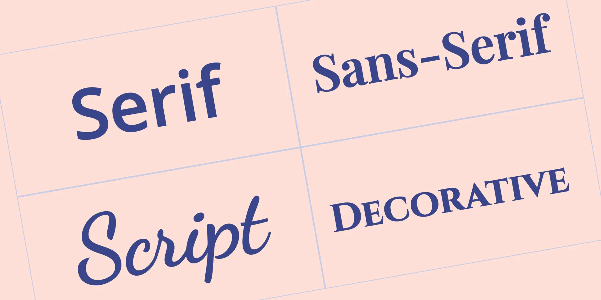
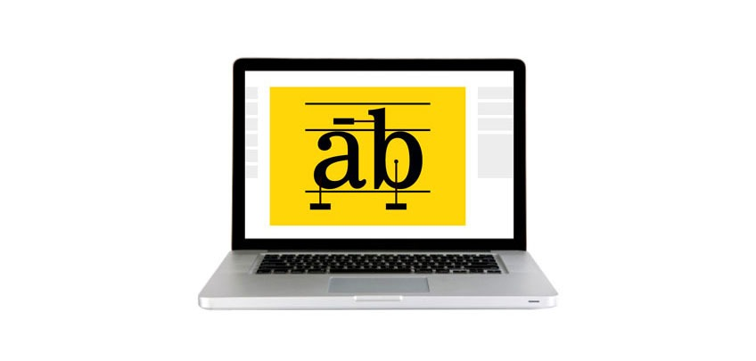
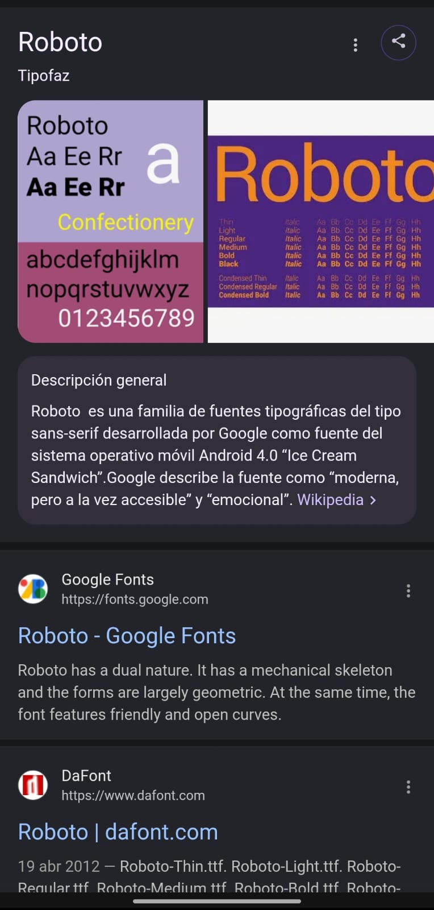
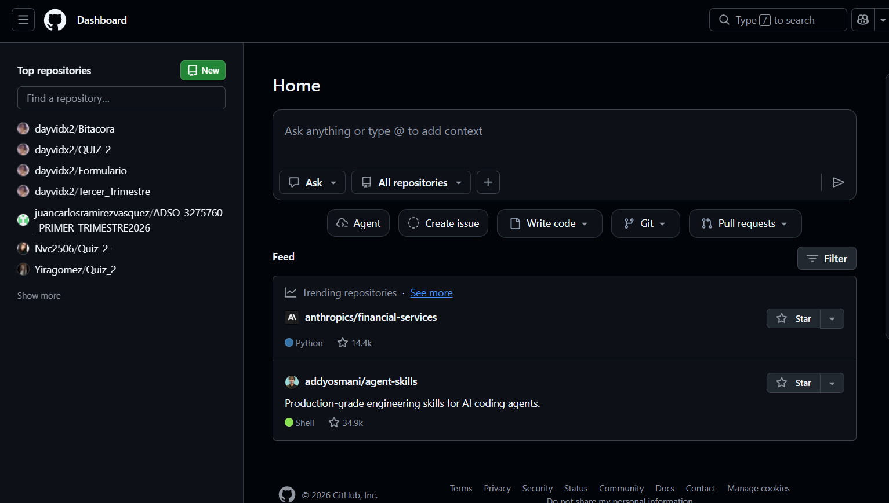
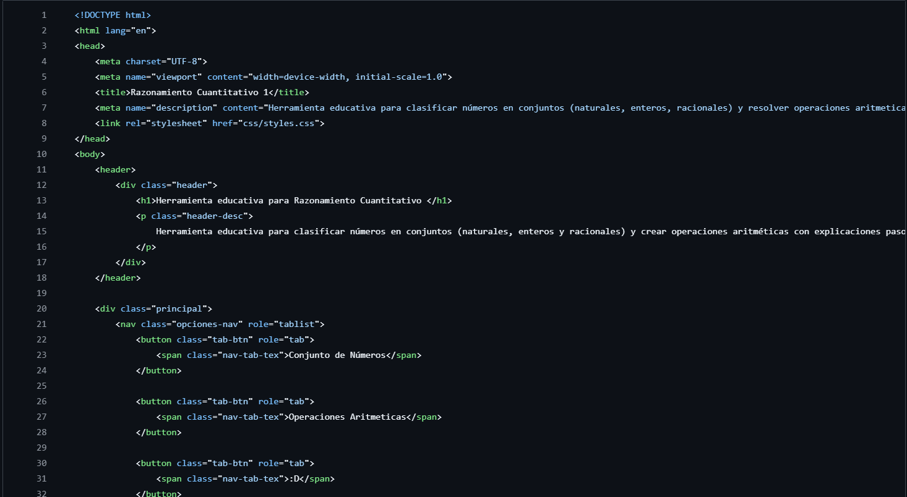

Tipografía en las Páginas Web

1. ¿Qué es la tipografía web?
La tipografía web es la forma en que se diseñan, organizan y muestran los textos dentro de una página web. Influye en la apariencia, accesibilidad y experiencia del usuario.

2. La Importancia en el desarrollo web
- Mejora la legibilidad en múltiples dispositivos.
- Optimiza la experiencia de usuario (UX).
- Refuerza identidad visual.
- Favorece accesibilidad.
3. Tipos de tipografías
Cada tipo de fuente transmite sensaciones distintas y se utiliza según el objetivo del sitio web. La elección correcta ayuda a comunicar mejor el propósito de una página.
- Serif: Elegancia, tradición y confianza. Ideal para periódicos, blogs formales o sitios institucionales.
- Sans Serif: Modernidad, simplicidad y claridad. Muy usada en aplicaciones, startups y plataformas digitales.
- Monospace: Precisión técnica. Común en editores de código, documentación técnica y dashboards para desarrolladores.
4. Ejemplos en páginas web
Analizar sitios conocidos permite entender cómo la tipografía se adapta a diferentes necesidades de negocio y usuarios.
Ejemplo 1: Google
Google utiliza Sans Serif (Product Sans/Roboto/Google Sans) porque ofrece lectura rápida, diseño minimalista y excelente visualización en móviles y escritorio.
Product Sans

Roboto

Google Sans
Ejemplo 2: Universidad Nacional De Colombia
La Universidad Nacional de Colombia utiliza una identidad visual institucional que transmite prestígio académico, tradición y confianza. caracteristicas asociadas a estilos tipográficos formales

Logo
Interfaz
Ejemplo 3: GitHub
GitHub utiliza Monospace(Mona Sans/Mona Sans Mono) por que ofrece modernidad, claridad, accesibilidad o presicion y alineacion visual

Mona Sans

Mona Sans Mono
5. Buenas prácticas
- Usar máximo 2 o 3 fuentes.
- Elegir fuentes optimizadas.
- Diseño responsive.
- Buen contraste.